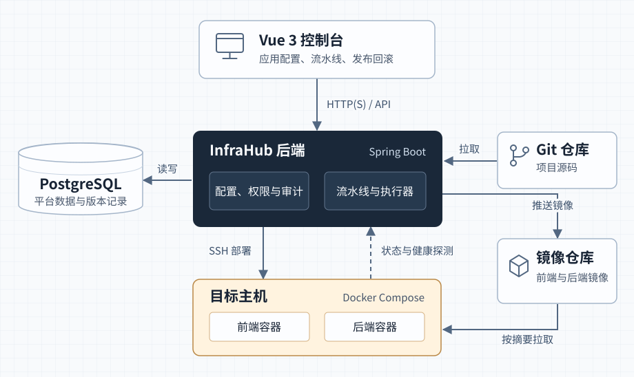
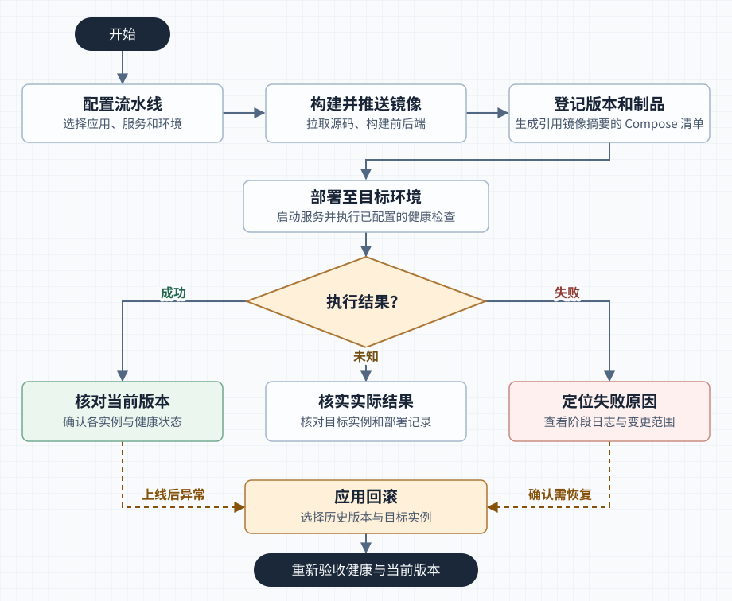

InfraHub
一个可自部署的应用交付与基础设施管理平台。
整体架构


发布与回滚流程图


流水线执行界面

用 Docker Compose 部署
准备 Git 和 Docker Compose v2。下面的步骤从仓库源码构建镜像。
-
获取源码和配置模板
git clone https://github.com/ty-ux/InfraHub.git cd InfraHub cp deploy/.env.example .envWindows PowerShell 可用
Copy-Item deploy/.env.example .env复制模板。 -
填写配置并启动
在
.env中设置POSTGRES_PASSWORD、至少 32 字节的随机JWT_SECRET，以及至少 15 个字符的INFRAHUB_AUTH_BOOTSTRAP_ADMIN_PASSWORD。docker compose up -d --build启动后在部署机器上打开
http://localhost:8088，使用admin和设置的初始密码登录，按提示修改密码。